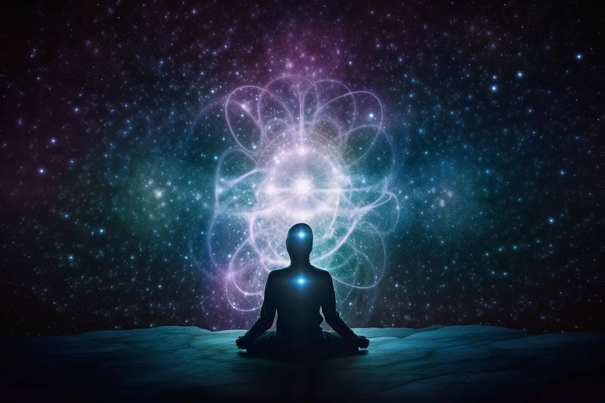
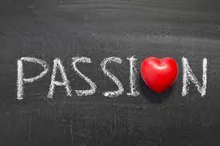
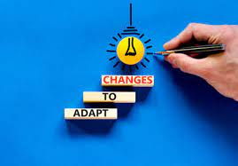
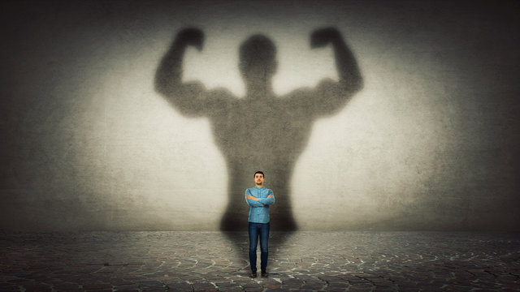

What is the purpose of sadness?
The foundational human emotions include
joy, fear, anger, disgust, and surprise.
Sadness belongs on this list, too.
It may not feel like positive emotion,
but there are some surprising benefits of sadness...
It helps us feel strong in the face of adversity
When we’re sad, we look inward to identify what’s bothering,
hurting, or angering us. When we know what’s hurting us,
we can start healing.

It tells others we need help
When we’re sad, we can’t help it. We wear it on our sleeves.
Showing our emotions can help signal that we need support.
And for your support system, it’s important they’re attuned
to your emotions. That way, other people that we’re going
through something and may need their help.
It reminds us of life’s meaning
Sadness acknowledges the special role of things in our lives.
If we’re sad about a fight with a friend, it’s because that
person is important to us. If we’re sad that we didn’t get a
job we applied for, it’s because
we care about our career development.
In a lot of ways, sadness reminds us of our personal values,
our purpose, and our passions.


It teaches us to adapt
Life is full of things we can’t avoid.
But sadness is a great teacher.
What makes us sad now might not be so hard later
because we’ve learned to adapt and be resilient.
It connects us with others
Sadness is a vulnerable emotional state.
But when we share it with others,
we form bonds by invoking their empathy.

It helps us feel strong in the face of adversity
Even the fiercest fighters know how important rest is,
and sadness lets us do just that. When we’re feeling sad,
we might feel tired, sluggish, and less receptive to the world.
But what are our body and our mind telling us?
To regain our strength.
By giving ourselves the permission to feel sadness,
we’re actually regaining our strength.